|
2010年1月环洞庭湖图片日记
day4(part A), 2010年1月29日
津市市 - 澧县 - 安乡县
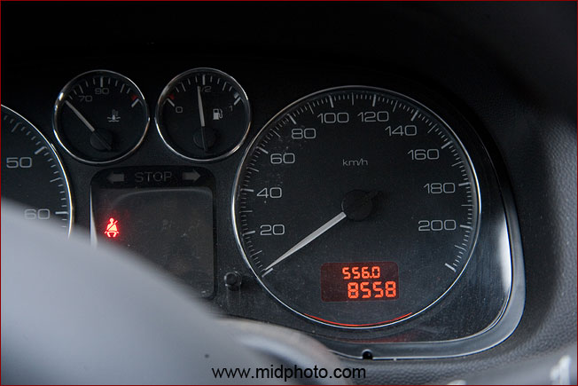
昨日行程 8558 - 8502 = 56公里
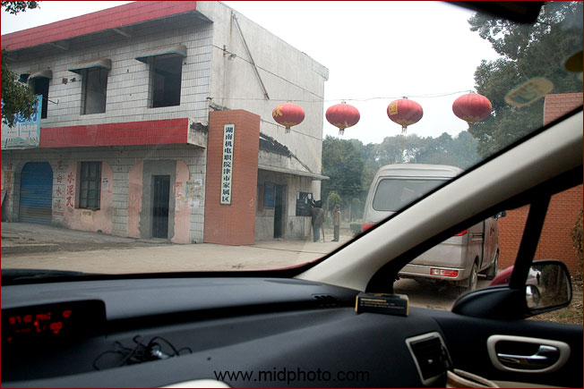
这个地方原来叫澧县一中，后来是湖南机电职业技术学院。从这个门进去是我小时候的天堂
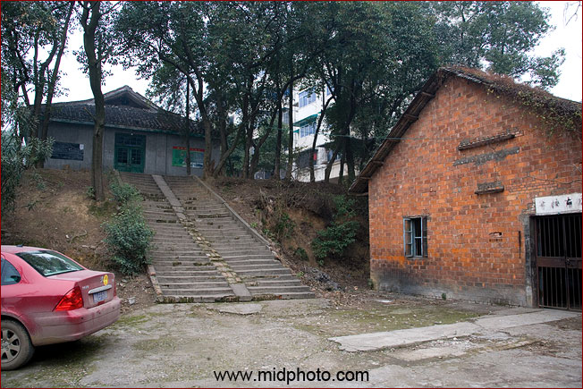
从这个台阶上去是一排低矮的平房。我记得某一年大雪，貌似1975年，积雪过膝，学校食堂传来好消息有油炸黄豆卖。我和姐姐把一条板凳翻过来当雪橇，拖着一大搪瓷碗油炸黄豆在雪地里快乐前行。难道就是这个地方？
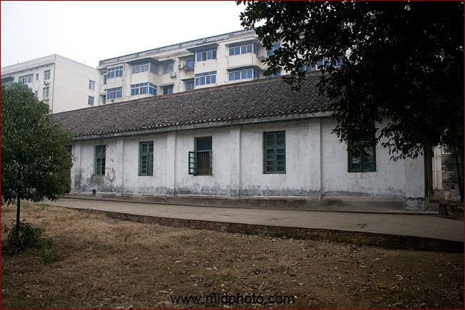
1970年到1976年我就住在这种平房里。但我记得没有这么气派，那房子可能早就拆了，房子的地板不是水泥的，直接就是泥地，被踩得乌黑溜光的泥地。如果我生气，我就在地上打滚。夏天直接躺在地上是非常舒服的。
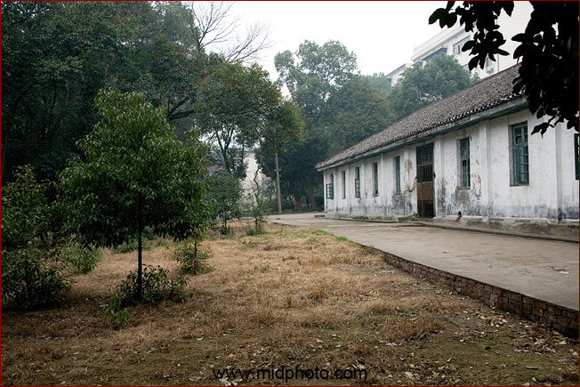
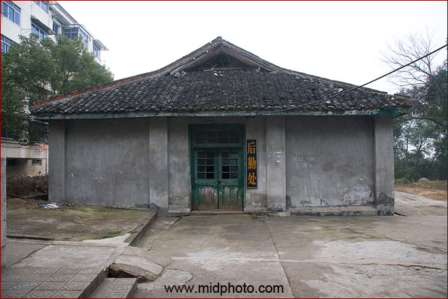
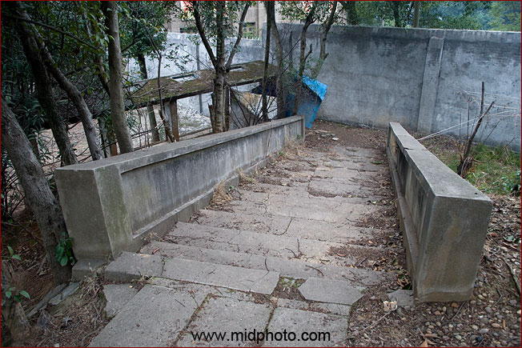
从这个台阶下去就是我妈妈以前上课的地方，澧县一中，但现在被围墙挡住了

台阶的下面貌似简易厕所

看来这里已经被废弃了
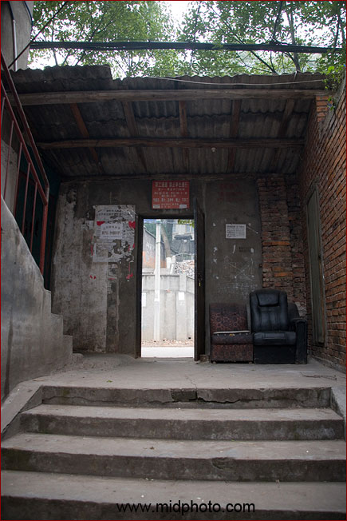
从这个门出去就是湘澧盐矿的大马路
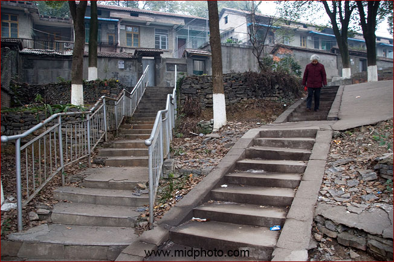
马路对面有一个小山包，有台阶上去
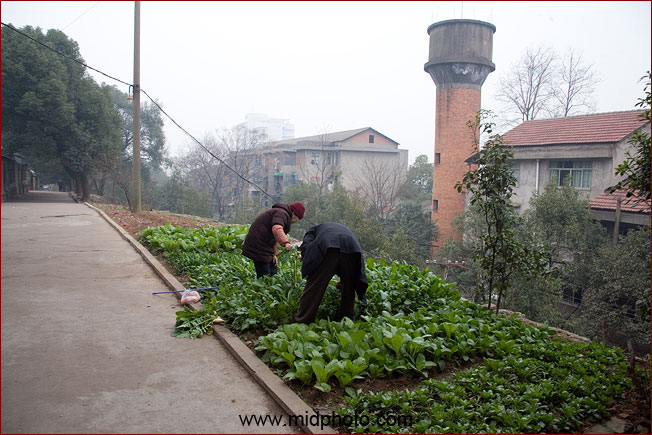
山包上有人爷爷奶奶种蔬菜
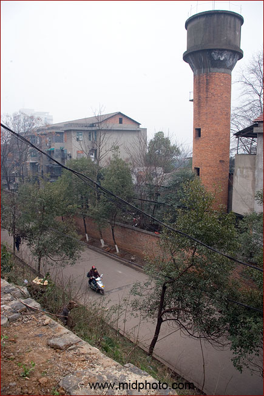
我记得山包下的这条马路是湘澧盐矿的运盐卡车必经之路。我小时候喜欢和同伴们站在这个山头上用小石子打运盐的汽车，看谁打得准。这在我现在看来是一种很恶劣的行为。小孩子的心和行为是大人永远难以理解的。孩子们需要被教育，正确的教育。
那时候运盐的除了汽车还有人力板车。很多板车都是有驴子拉的。我那时候最大理想就是当一个板车夫，当然是要有驴子的，而且还要两头。
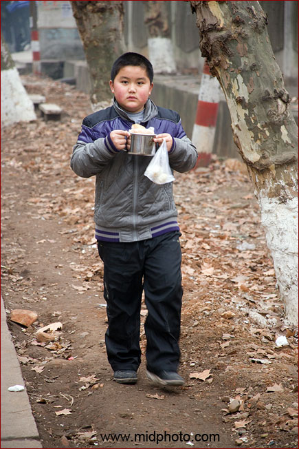
到1976年我6岁的时候我姐姐到湘澧盐矿子弟小学读一年级去了。我变得很落寞。因为住家和学校就只相隔一条马路，上午课间休息的时候我有时候会提着馒头端着豆浆给姐姐送早餐去，就像刚才路上遇到的这个孩子一样。当然，我那时比这个孩子小很多，6岁吧。

湘澧盐矿子弟小学现在是津市市第五小学
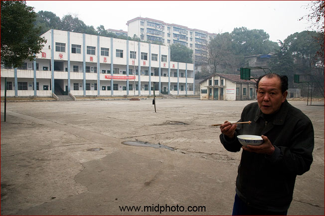
小学传达室的守门人
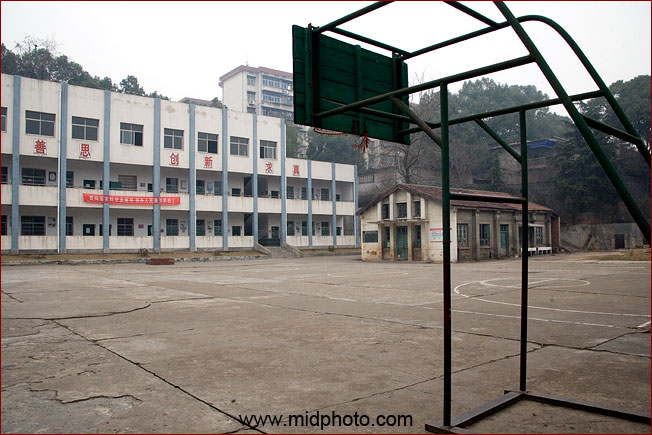
新老楼
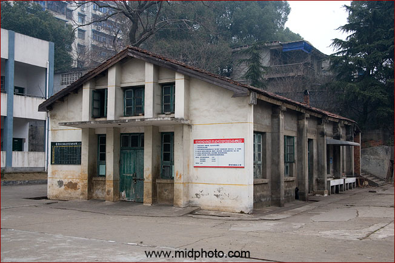
校园里还有最后一栋老苏式建筑

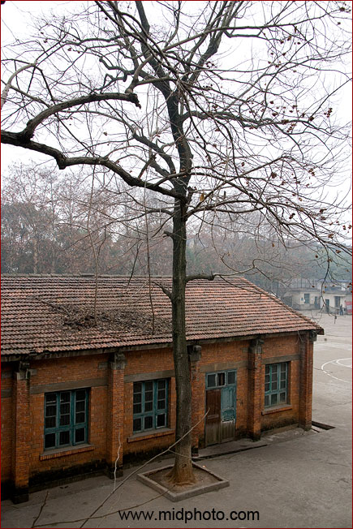
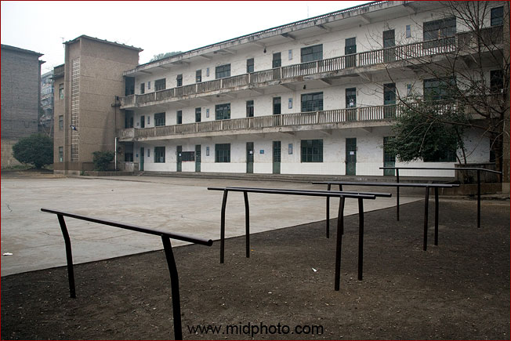
津市市第五小学较老的一栋教学楼
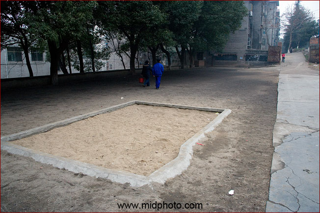
沙坑是我小时候最大乐园
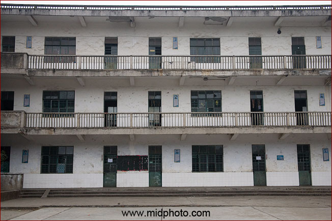
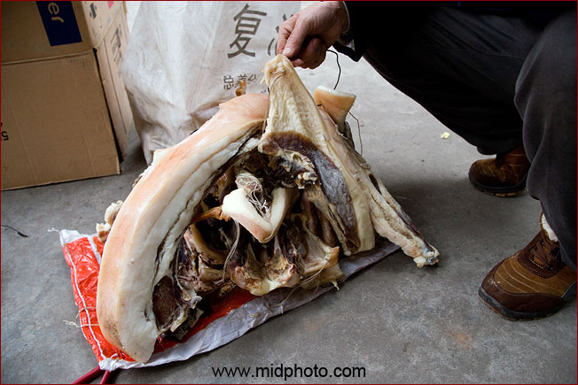
盐矿家属区腊肉

拥有这种老式凤凰自行车，在1970年代是财主的标志
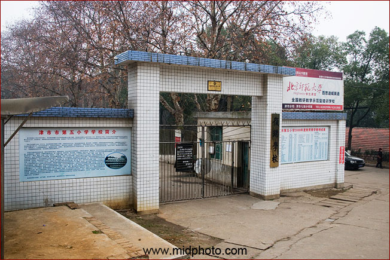
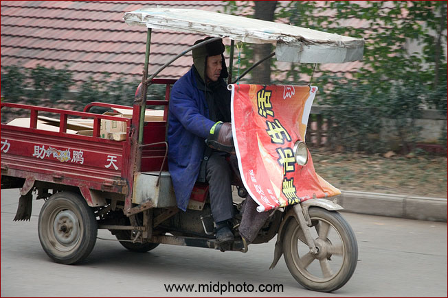
津市生活
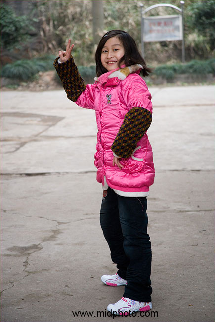
路遇小美女
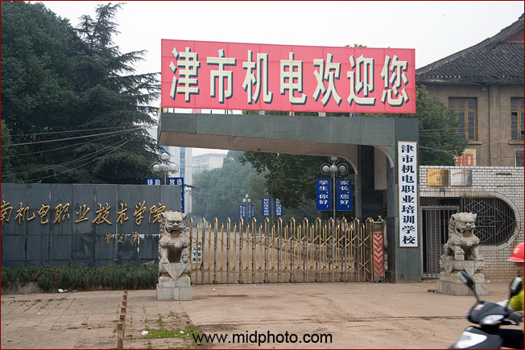
到底是湖南机电还是津市机电呢
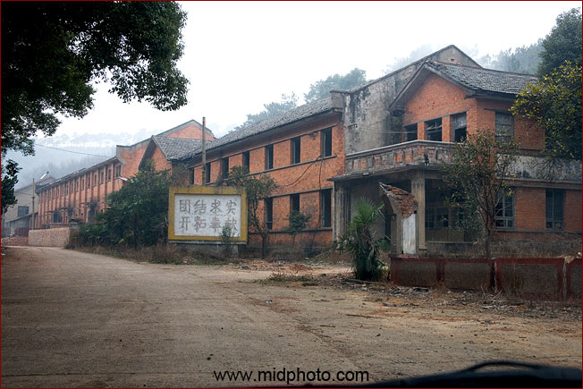
离开津市机电大门我赶往太平陵园，这里埋葬着我二舅舅。但我迷路了，驾车一路猛跑，十几分钟后来到了一个不知名的工厂，好像来到了鬼城。
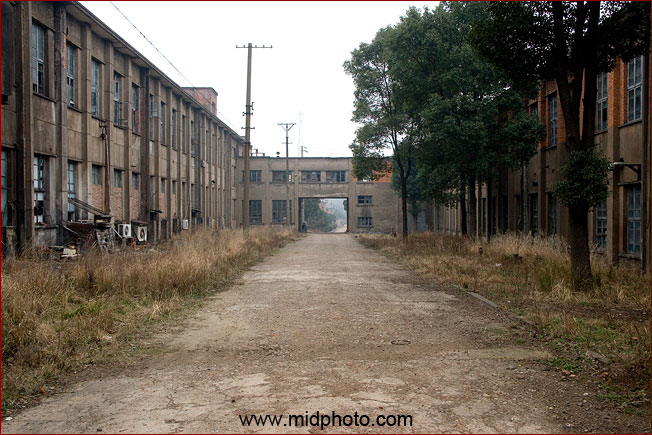
这个工厂挺大，但貌似已经废弃
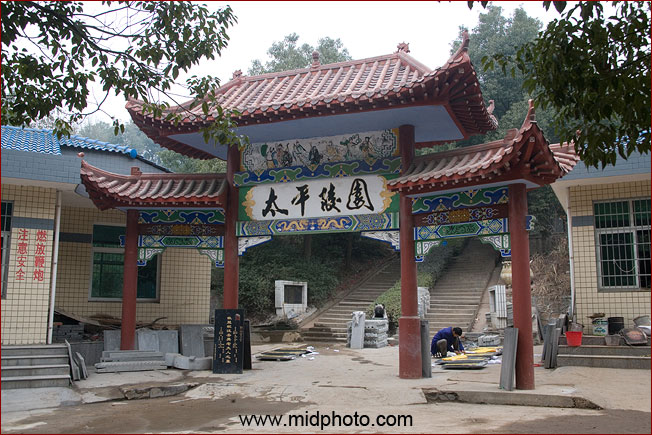
一边走一边问路，终于找到了太平陵园
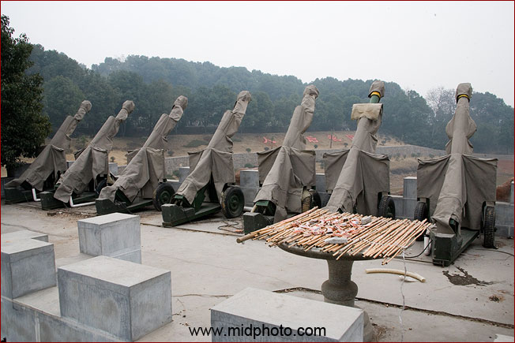
如果有钱，可以21响礼炮欢迎入住

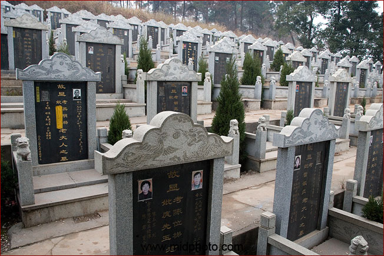
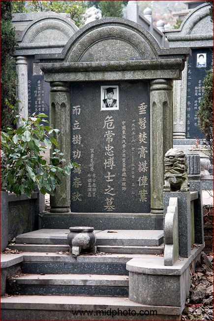
这个博士，死的时候只有37岁
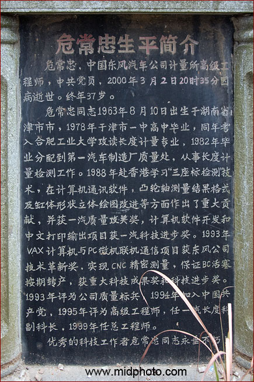
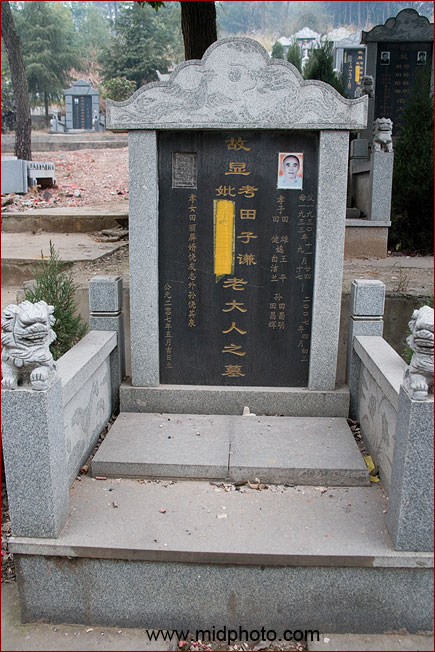
合葬的很多
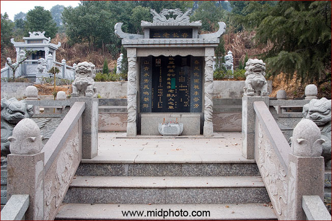
最顶上的墓最豪华，也最贵。
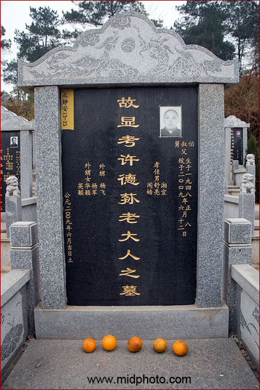
终于找到了我二舅舅的墓。他这个是八千元级别的。我把在路上买的几个桔子供奉上。
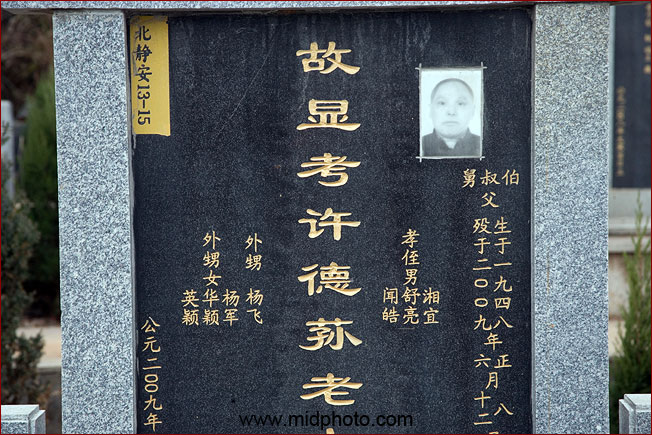
我二舅许德荪先生终生未婚，去年去世的时候才62岁，他孤单的一个人死在寓所里，非常凄惨，据说是邻居闻到了尸臭才报警的。可能是死于心脏病。没有遗像，这个照片是从他身份证上复制下来的。
我妈说他们这几兄妹就属二舅长得最漂亮。但37岁的时候一场大火让他毁了容，从此他就变得非常怪异。甚至不许亲人来看他，包括我妈妈。我最后一次见到他是在2003年10月。然后就是在去年的津市市殡仪馆了。我记忆里，1978年我8岁的时候他还带我去岳麓山玩，在山脚湖南大学他买了一杯散装啤酒，我也第一次喝到了啤酒，觉得非常难喝，这个世界还有人花钱来买这么难喝的东西，我当时很不理解。但时过境迁，我现在不但喝啤酒，还喜欢喝最苦的黑啤酒。
God be with you.
|